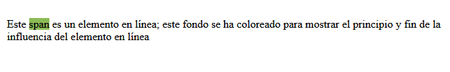
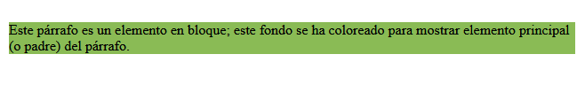
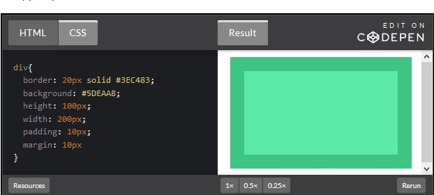

a. Selector
Un selector CSS se puede definir como el código que identifica a uno o varios elementos HTML
para aplicarle estilos de color, tamaño, separación, etc.
b. Propiedad
Se puede tomar como la acción a realizar al momento de utilizar el selector.
c. Valor
Como su nombre lo dice es la característica que se le da a la propiedad del selector.
Tipos de selectores
1. Selector universal
Sintaxis: * { atributo:valor; }
Ejemplo:* { color: grey; }.
El estilo se aplicará a todos los elementos de la página.
2. Selector etiqueta
Sintaxis: etiqueta { atributo:valor }
Ejemplo: p {color: green;}.
El estilo se aplicará a todos los elementos del parrafo.
3. Selector clase
Sintaxis: .clase { atributo:valor }
Ejemplo: .index {color: red;}
El estilo se aplicará a cualquier elemento que tenga la clase .index
4. Selector identificador
El selector identificador utiliza el atributo id para seleccionar un elemento. Solo puede haber un elemento con un id dado en un documento.
Sintaxis: #id { atributo:valor }
Ejemplo: #cent {color: blue;}
El estilo se aplicará al elemento que tenga el id #cent
5. Selector descendiente
Un elemento es descendiente de otro cuando se encuentra entre las etiquetas de apertura y de cierre del elemento padre.
Su sintaxis es: selector1 selector2… slectorN. Siendo el selector N el elemento sobre el que se aplica el estilo.
selector1 selector2 selectorN{propiedad: valor;}
6. Combinación de selectores
La combinación de selectores nos permite dar un estilo a todos los selectores indicados.
selector1, selector2, selector3{propiedad: valor;}
7. Selector de hijos
Se usa para seleccionar un elemento que es hijo de otro elemento y se indica mediante el signo “mayor que” (>).
selector1 > selector2{propiedad: valor;}
Elementos de linea y elementos de bloque
Elementos de Línea
Los elementos en HTML usualmente son elementos en línea. Un elemento en línea ocupa sólo el espacio delimitado por las etiquetas que definen el elemento en línea. El siguiente ejemplo demuestra la influencia de los elementos en línea:
HTML
Este span es un elemento en línea; este fondo se ha coloreado para mostrar el principio y fin de la influencia del elemento en línea
CSS
span { background-color: #8ABB55; }

Elemento de Bloque
Los elementos, en HTML usualmente son elementos en bloque. Un elemento en bloque ocupa todo el espacio de su elemento padre (contenedor), creando así un bloque.
Los navegadores suelen mostrar el elemento a nivel de bloque con un salto de línea antes y después del elemento. El siguiente ejemplo demuestra la influencia elementos en bloque:
HTML
Este párrafo es un elemento en bloque; este fondo se ha coloreado para mostrar elemento principal (o padre) del párrafo.
CSS
p { background-color: #8ABB55; }

¿Qué es el modelo de caja en CSS?
Cada elemento que encontramos dentro de un documento HTML se encuentra contenido en una caja rectangular, la cual cuenta con una serie de propiedades que afectaran el cómo se muestran los elementos.
Al trabajar con un modelo de caja, debemos tener en cuenta que existen dos propiedades principales para definirla, height y width, que definirán el ancho y alto de nuestra caja.
Adicionalmente a estas, tenemos el Margin, Padding y Border que nos brindaran mayor control al momento de organizar los elementos.
